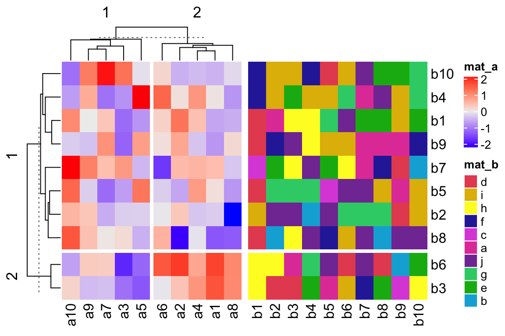
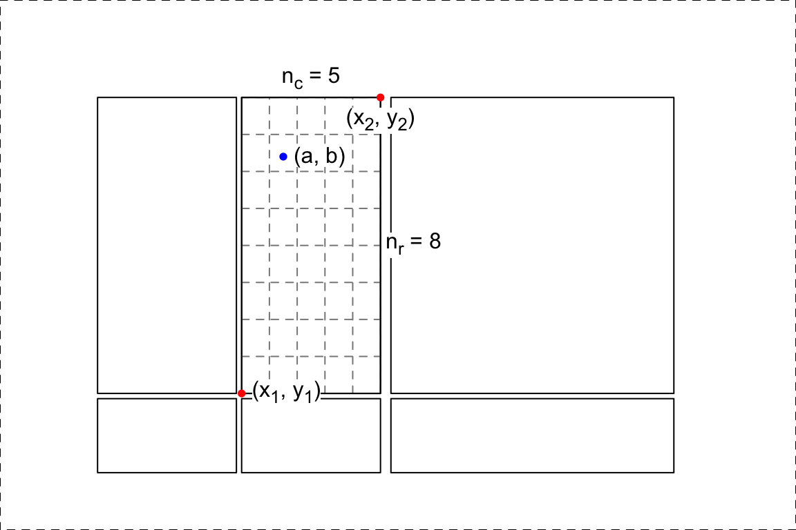

Chapter 9 Interactive ComplexHeatmap
Heatmaps are mainly for visualizing common patterns that are shared by groups of rows and columns. After the patterns have been seen, the next step is to extract the corresponding rows and columns from the heatmap, which requires interactivity on the heatmaps. ComplexHeatmap package is used for generating static heatmaps. From version 2.5.3, it is now possible to make complex heatmaps interactive! The new functionalities allow users to capture sub-heatmaps by clicking or selecting areas from heatmaps.
To demonstrate this new functionality, I first generate two heatmaps and apply k-means clustering on the numeric one.
library(ComplexHeatmap)
set.seed(123)
mat1 = matrix(rnorm(100), 10)
rownames(mat1) = colnames(mat1) = paste0("a", 1:10)
mat2 = matrix(sample(letters[1:10], 100, replace = TRUE), 10)
rownames(mat2) = colnames(mat2) = paste0("b", 1:10)
ht_list = Heatmap(mat1, name = "mat_a", row_km = 2, column_km = 2) +
Heatmap(mat2, name = "mat_b")ComplexHeatmap package allows two types of interactivity: 1. on the interactive graphics device and 2. on a Shiny app.
9.1 On the interactive graphics device
Here the “interactive graphics device” is the window that is opened for generating plots in your R session, or the figure panel in Rstudio IDE.
In the following parts of this post, I will explain how the correspondance between the points user selected and the values in the heatmap/matrix is done in ComplexHeatmap package.
When user clicks on the device, the physical locations relative in the device
are captured by grid::grid.locator(). The physical locations of the heatmaps
(more precisely, the heatmap slices) are also captured via the new
ht_pos_on_device() function (thanks to grid::deviceLoc()).
Before executing ht_pos_on_device(), the heatmap should be drawn on the
device and the layout of heatmaps should have been done, thus, the heatmap object
ht_list should be updated explictly by the draw() function.

The returned object pos is a DataFrame object that contains the positions
of all heatmap slices. A DataFrame object (the DataFrame class is defined
in S4Vectors package from
Bioconductor)
is bacially very similar as a data frame, but it can store more complex data
types, such as the simpleUnit (generated by grid::unit()) vectors as in pos
(click the “show/hide output” button to see the output).
## DataFrame with 6 rows and 8 columns
## heatmap slice row_slice column_slice
## <character> <character> <integer> <integer>
## 1 mat_a mat_a_heatmap_body_1_1 1 1
## 2 mat_a mat_a_heatmap_body_1_2 1 2
## 3 mat_a mat_a_heatmap_body_2_1 2 1
## 4 mat_a mat_a_heatmap_body_2_2 2 2
## 5 mat_b mat_b_heatmap_body_1_1 1 1
## 6 mat_b mat_b_heatmap_body_2_1 2 1
## x_min x_max y_min
## <simpleUnit> <simpleUnit> <simpleUnit>
## 1 0.736349162910223inches 1.78273889506765inches 1.03050115700316inches
## 2 1.82210897380781inches 2.86849870596523inches 1.03050115700316inches
## 3 0.736349162910223inches 1.78273889506765inches 0.43284365824135inches
## 4 1.82210897380781inches 2.86849870596523inches 0.43284365824135inches
## 5 2.94723886344555inches 5.07938840650056inches 1.03050115700316inches
## 6 2.94723886344555inches 5.07938840650056inches 0.43284365824135inches
## y_max
## <simpleUnit>
## 1 3.26365083708978inches
## 2 3.26365083708978inches
## 3 0.991131078263004inches
## 4 0.991131078263004inches
## 5 3.26365083708978inches
## 6 0.991131078263004inchesWe can confirm whether the positions are correctly captured by the following code. In the next figure, black rectangles correspond to the heatmap slices and the dashed rectangle corresponds to the border of the whole image.
# If you try the code in your interactive R session, you need the following
# two lines to open a new device with the same size as the current one.
# ds = dev.size()
# dev.new(width = ds[1], height = ds[2])
grid.newpage()
grid.rect(gp = gpar(lty = 2))
for(i in seq_len(nrow(pos))) {
x_min = pos[i, "x_min"]
x_max = pos[i, "x_max"]
y_min = pos[i, "y_min"]
y_max = pos[i, "y_max"]
pushViewport(viewport(x = x_min, y = y_min, name = pos[i, "slice"],
width = x_max - x_min, height = y_max - y_min,
just = c("left", "bottom")))
grid.rect()
upViewport()
}Since now we know the location of the point that user clicked and the positions of all heatmap slices, it is possible to calculate which row and which column in the original matrix user’s point corresponds to.
In the next figure, the blue point with the coordinate \((a, b)\) is clicked by user. The heatmap slice where user clicked into has range \((x_1,x_2)\) on x direction and range \((y_1, y_2)\) on y direction. There are \(n_r\) rows (\(n_r =8\)) and \(n_c\) columns (\(n_c = 5\)) in this heatmap slice and they are marked by dashed lines.

Relative in this heatmap slice, the row index \(i_r\) and column index \(i_c\) of the cell where the point is in can be calculated as:
\[ i_c = \lceil \frac{a - x_1}{x_2 - x_1} \cdot n_c \rceil \] \[ i_r = \lceil \frac{b - y_1}{y_2 - y_1} \cdot n_r \rceil \]
where the symbol \(\lceil x \rceil\) means the ceiling of the numeric value \(x\). If the row on the top has the index of 1, then \(i_r\) should be calculated as:
\[ i_r = n_r - \lceil \frac{b - y_1}{y_2 - y_1} \cdot n_r \rceil + 1 \]
The subset of row and column indices of the original matrix that belongs to
the selected heatmap slice is already stored in ht_list object, thus, we can
obtain the row and column index of the original matrix that corresponds to
user’s point easily with \(i_r\) and \(i_c\).
ComplexHeatmap package now has two new functions selectPosition() and
selectArea() which allows users to pick single positions or select areas
from the heatmaps. Under the interactive graphics device, users do not need to
run ht_pos_on_device() explicitly. The positions of heatmaps are
automatically calculated, cached and reused if the heatmaps are the same and
the device has not changed its size.
The next image shows an example of using selectPosition(). Interactively,
the function asks user to click one position on the heatmap. The function
returns a DataFrame which contains the heatmap name, slice name and the
row/column index of the matrix in that heatmap. An example output can be found
by clicking the button below.
## DataFrame with 1 row and 6 columns
## heatmap slice row_slice column_slice row_index
## <character> <character> <numeric> <numeric> <integer>
## 1 mat_a mat_a_heatmap_body_1_2 1 2 9
## column_index
## <integer>
## 1 1If the position clicked is not in any of the heatmap slices, the function
returns NULL.

Similarly, the selectArea() function asks user to click two positions on the
heatmap which defines an area. Note since the selected area may overlap over
multiple heatmaps and slices, the function returns a DataFrame with multiple
rows which contains the heatmap names, slice names and the row/column indices
in that heatmap. An example output can be found by clicking the button below.
## DataFrame with 4 rows and 6 columns
## heatmap slice row_slice column_slice row_index
## <character> <character> <numeric> <numeric> <IntegerList>
## 1 mat_a mat_a_heatmap_body_1_2 1 2 7,5,2,...
## 2 mat_a mat_a_heatmap_body_2_2 2 2 6,3
## 3 mat_b mat_b_heatmap_body_1_1 1 1 7,5,2,...
## 4 mat_b mat_b_heatmap_body_2_1 2 1 6,3
## column_index
## <IntegerList>
## 1 2,4,1,...
## 2 2,4,1,...
## 3 1,2,3,...
## 4 1,2,3,...The columns row_index and column_index are stored in IntegerList format.
To get the row indices in e.g. mat_a_heatmap_body_1_2 (in the first row), user should use one
of the following code (assume the DataFrame object is called df):
The rectangle and the points that mark the area can be turned off by setting
mark argument to FALSE.

9.2 On other devices
It is also possible to use on other non-interactive graphics devices, such as
pdf() or png(). Now you cannot select the positions interactively, but
instead you should specify pos argument in selectPosition() and
pos1/pos2 in selectArea(). The values for pos, pos1 and pos2
all should be a unit object of length two which correspond to the x and y
coordinate of the positions.
# pdf(...) or png(...) or other graphics devices
ht_list = draw(ht_list)
pos = selectPosition(ht_list, pos = unit(c(3, 3), "cm"))## Point: x = 3.0 cm, y = 3.0 cm (measured in the graphics device)
##
## The heatmaps have been changed. Calcualte the new heatmap positions.
## Search in heatmap 'mat_a'
## - row slice 1, column slice 1 [mat_a_heatmap_body_1_1]... overlap## DataFrame with 1 row and 6 columns
## heatmap slice row_slice column_slice row_index
## <character> <character> <numeric> <numeric> <integer>
## 1 mat_a mat_a_heatmap_body_1_1 1 1 8
## column_index
## <integer>
## 1 7# pdf(...) or png(...) or other graphics devices
ht_list = draw(ht_list)
pos = selectArea(ht_list, pos1 = unit(c(3, 3), "cm"), pos2 = unit(c(5, 5), "cm"))## Point 1: x = 3.0 cm, y = 3.0 cm (measured in the graphics device)
## Point 2: x = 5.0 cm, y = 5.0 cm (measured in the graphic device)
##
## Heatmap positions are already calculated, use the cached one.
## Search in heatmap 'mat_a'
## - row slice 1, column slice 1 [mat_a_heatmap_body_1_1]... overlap
## Search in heatmap 'mat_a'
## - row slice 1, column slice 2 [mat_a_heatmap_body_1_2]... overlap
## Search in heatmap 'mat_a'
## - row slice 2, column slice 1 [mat_a_heatmap_body_2_1]... no overlap
## Search in heatmap 'mat_a'
## - row slice 2, column slice 2 [mat_a_heatmap_body_2_2]... no overlap
## Search in heatmap 'mat_b'
## - row slice 1, column slice 1 [mat_b_heatmap_body_1_1]... no overlap
## Search in heatmap 'mat_b'
## - row slice 2, column slice 1 [mat_b_heatmap_body_2_1]... no overlap## DataFrame with 2 rows and 6 columns
## heatmap slice row_slice column_slice row_index
## <character> <character> <numeric> <numeric> <IntegerList>
## 1 mat_a mat_a_heatmap_body_1_1 1 1 7,5,2,...
## 2 mat_a mat_a_heatmap_body_1_2 1 2 7,5,2,...
## column_index
## <IntegerList>
## 1 7,3,5
## 2 6Normally, users do not need to use it directly, however, it is very useful when developing a Shiny app where the plot is actually under a non-interactive graphics device. I will explain in the next section.
9.3 Shiny app
With the three functions ht_pos_on_device(), selectPosition() and selectArea(),
it is possible to implement Shiny apps for interactively working with heatmaps.
ComplexHeatmap now has a ht_shiny() function which directly exports a heatmap
(or a heatmap list) into a Shiny app.
To use ht_shiny(), the Heatmap/HeatmapList object is not necessary to be
updated with draw(), however, updating by draw() will speed up the loading
of the Shiny app because draw() applies clustering saves it into the heatmap object.
To export the ht_list that is already generated into a Shiny app, simply
execute ht_shiny() as following. Please visit
https://jokergoo.shinyapps.io/interactive_complexheatmap/ for a live demo.
The following code demostrates two vertically concatenated heatmaps. Check https://jokergoo.shinyapps.io/interactive_complexheatmap_vertical/ for a live demo.
ht_list = Heatmap(mat1, name = "mat_a", row_km = 2, column_km = 2) %v%
Heatmap(mat2, name = "mat_b")
ht_shiny(ht_list)densityHeatmap() returns a Heatmap object, thus it can also be exported into a Shiny app.
Check https://jokergoo.shinyapps.io/interactive_densityheatmap/ for a live demo.
EnrichedHeatmap also outputs Heatmap objects, thus, an “enriched heatmap” can be exported
into a Shiny app as well. Check https://jokergoo.shinyapps.io/interactive_enrichedheatmap/ for a live demo.
library(EnrichedHeatmap)
load(system.file("extdata", "chr21_test_data.RData", package = "EnrichedHeatmap"))
mat_meth = normalizeToMatrix(meth, cgi, value_column = "meth",
mean_mode = "absolute", extend = 5000, w = 50, smooth = TRUE)
ht = EnrichedHeatmap(mat_meth, name = "methylation",
column_title = "methylation near CGI")
ht_shiny(ht)Since ComplexHeatmap can seamlessly integrate pheatmap, this means your pheatmap can be interactive!
Following screenshot demonstrates the Shiny app on rather complex heatmaps. The data is from here with slightly changing the original code for making heatmaps.
In this Shiny app, users can click on the orignal heatmap or select an area from it. The information of the area selected by users can be found in the text below the heatmaps. If an area is selected, the row and column indices for all selected heatmaps can be obtained from a automatically generated sourcable code, which can also be found below the heatmap. Both heatmaps can be resized by dragging from the bottom right.

Please note, if the heatmap is too huge or you resize the heatmap too frequently, the heatmap might not be correctly updated. You can just slightly resize the heatmap again and wait for several seconds (you might have already observed from the previous screenshot that the right heatmap was not properly drawn when I first resized it).
The sub-heatmap visualized on the right side in the Shiny app will not contain
anything drawn from cell_fun/layer_fun or decorate_*() functions, which
means you cannot export an
oncoPrint
or a UpSet plot into a Shiny app.
9.4 Implement a Shiny app from scratch
Next I will demonstrate how to build a Shiny app from scratch with
ht_pos_on_device(), selectPosition() and selectArea(). First I provide
a runnable example, and later I explain it step by step. In this example, I
only use a single heatmap for simplicity.
# you can copy the following code and paste into your R session, the app runs.
library(shiny)
library(glue)
library(ComplexHeatmap)
set.seed(123)
mat = matrix(rnorm(100), 10)
rownames(mat) = colnames(mat) = paste0("a", 1:10)
ht = Heatmap(mat, name = "mat")
ui = fluidPage(
fluidRow(
column(width = 3,
plotOutput("main_heatmap", height = 300, width = 300,
brush = "ht_brush", click = "ht_click")
),
column(width = 3,
plotOutput("sub_heatmap", height = 300, width = 300)
)
),
verbatimTextOutput("ht_click_content")
)
shiny_env = new.env()
server = function(input, output) {
output$main_heatmap = renderPlot({
shiny_env$ht = draw(ht)
shiny_env$ht_pos = ht_pos_on_device(shiny_env$ht)
})
output$sub_heatmap = renderPlot({
if(is.null(input$ht_brush)) {
grid.newpage()
grid.text("No region is selected.", 0.5, 0.5)
} else {
lt = ComplexHeatmap:::get_pos_from_brush(input$ht_brush)
pos1 = lt[[1]]
pos2 = lt[[2]]
ht = shiny_env$ht
pos = selectArea(ht, mark = FALSE, pos1 = pos1, pos2 = pos2,
verbose = FALSE, ht_pos = shiny_env$ht_pos)
row_index = unlist(pos[1, "row_index"])
column_index = unlist(pos[1, "column_index"])
m = ht@ht_list[[1]]@matrix
ht_select = Heatmap(m[row_index, column_index, drop = FALSE],
col = ht@ht_list[[1]]@matrix_color_mapping@col_fun,
show_heatmap_legend = FALSE,
cluster_rows = FALSE, cluster_columns = FALSE)
draw(ht_select)
}
})
output$ht_click_content = renderText({
if(is.null(input$ht_click)) {
"Not selected."
} else {
pos1 = ComplexHeatmap:::get_pos_from_click(input$ht_click)
ht = shiny_env$ht
pos = selectPosition(ht, mark = FALSE, pos = pos1,
verbose = FALSE, ht_pos = shiny_env$ht_pos)
row_index = pos[1, "row_index"]
column_index = pos[1, "column_index"]
m = ht@ht_list[[1]]@matrix
v = m[row_index, column_index]
glue("row index: {row_index}",
"column index: {column_index}",
"value: {v}", .sep = "\n")
}
})
}
shinyApp(ui, server)The UI of the app is simple. The left is the original heatmap which allows clicking and brushing, and the right is the heatmap for the sub-matrix selected. Below the heatmap is a text area which provides information for the selected area.
ui = fluidPage(
fluidRow(
column(width = 3,
plotOutput("main_heatmap", height = 300, width = 300,
brush = "ht_brush", click = "ht_click")
),
column(width = 3,
plotOutput("sub_heatmap", height = 300, width = 300)
)
),
verbatimTextOutput("ht_click_content")
)Here we have an environment to put global variables in, that can be shared between different Shiny components.
Once the app is lanched, the heatmap is drawn. Here if ht has not been
previously updated by draw(), the draw() inside renderPlot() will also
perform clustering, or else it only redraws the heatmap.
Once the heatmap is drawn, the heatmap will not change, thus, we save the
heatmap object (returned by draw() where clustering is done and layout is
initialized) as well as the positions of heatmap in the image (ht_opt) as
global variables.
output$main_heatmap = renderPlot({
shiny_env$ht = draw(ht)
shiny_env$ht_pos = ht_pos_on_device(shiny_env$ht)
})The next following code defines the action when user selects an area from the
original heatmap. The variable input$ht_brush contains the position of the
selected area in the heatmap image. Here the ComplexHeatmap:::get_pos_from_brush()
is a simple function which retrieves the positions and saves them as
grid::unit objects.
In the code, lt[[1]] and lt[[2]] contain coordinates of the two
diagonal points that user selected. The two coordinates are sent to
selectArea() where ht_pos is also specified so that the heatmap positions
are not repeatedly calculated. Finally the row and column indicies can be
retrieved and the sub-heatmap is made.
output$sub_heatmap = renderPlot({
if(is.null(input$ht_brush)) {
grid.newpage()
grid.text("No region is selected.", 0.5, 0.5)
} else {
lt = ComplexHeatmap:::get_pos_from_brush(input$ht_brush)
pos1 = lt[[1]]
pos2 = lt[[2]]
ht = shiny_env$ht
pos = selectArea(ht, mark = FALSE, pos1 = pos1, pos2 = pos2,
verbose = FALSE, ht_pos = shiny_env$ht_pos)
row_index = unlist(pos[1, "row_index"])
column_index = unlist(pos[1, "column_index"])
m = ht@ht_list[[1]]@matrix
ht_select = Heatmap(m[row_index, column_index, drop = FALSE],
col = ht@ht_list[[1]]@matrix_color_mapping@col_fun,
show_heatmap_legend = FALSE,
cluster_rows = FALSE, cluster_columns = FALSE)
draw(ht_select)
}
})The following code defines the action when user click a position on the
original heatmap. Similar as ComplexHeatmap:::get_pos_from_brush(),
ComplexHeatmap:::get_pos_from_click() returns the clicked position in the
image.
Similarly, the position is sent to selectPosition(), and the row and column
index that correspond to the clicked position can be retrieved.
output$ht_click_content = renderText({
if(is.null(input$ht_click)) {
"Not selected."
} else {
pos1 = ComplexHeatmap:::get_pos_from_click(input$ht_click)
ht = shiny_env$ht
pos = selectPosition(ht, mark = FALSE, pos = pos1,
verbose = FALSE, ht_pos = shiny_env$ht_pos)
row_index = pos[1, "row_index"]
column_index = pos[1, "column_index"]
m = ht@ht_list[[1]]@matrix
v = m[row_index, column_index]
glue("row index: {row_index}",
"column index: {column_index}",
"value: {v}", .sep = "\n")
}
})